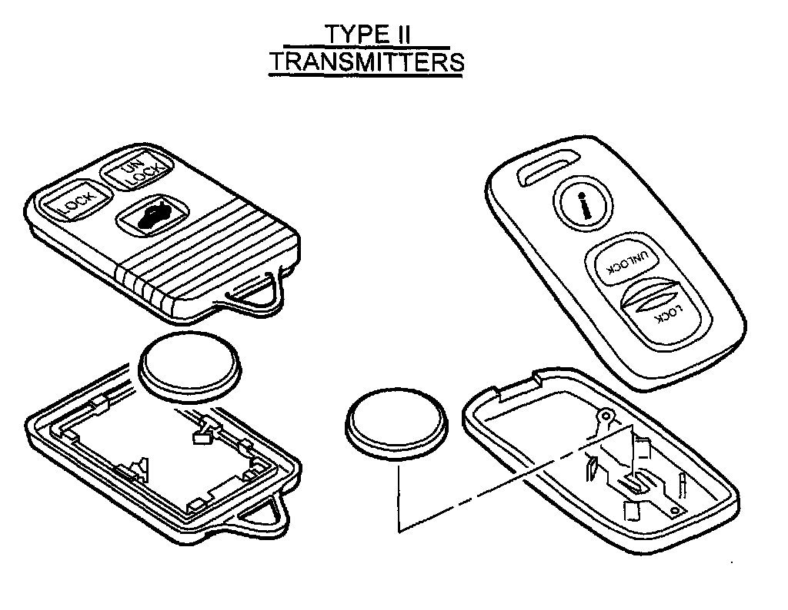
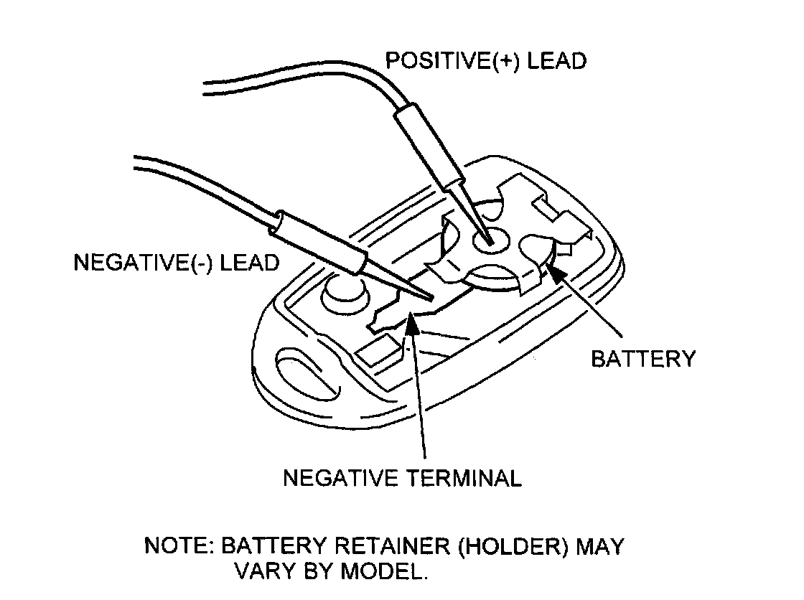
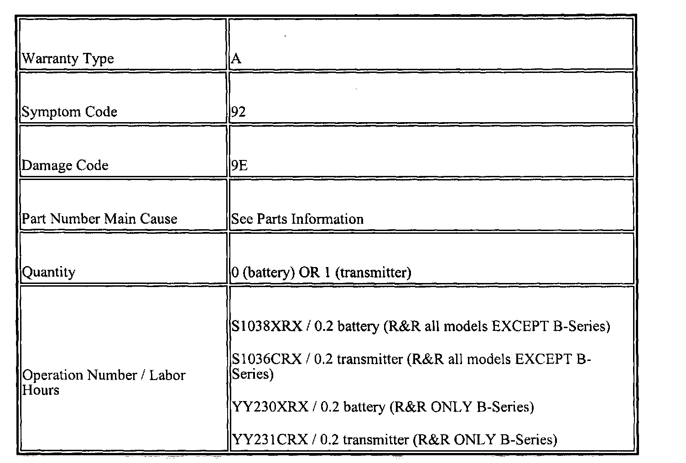

Keyless Entry - Transmitter Battery Inspection
09-010/00Keyless Remote Transmitter Battery Inspection
Procedures
APPLICABLE MODELS
All 1998-2001 models.
DESCRIPTION
Some vehicles are not able to be opened with the keyless remote transmitter. This may be caused by a defective transmitter, receiver or a weak transmitter battery.
Customers having this concern should have their vehicle repaired using the following procedure.
REPAIR PROCEDURE
1. Verify customer concern.


2. Determine whether transmitter is a TYPE I or TYPE II. Refer to the illustrations and proceed to the applicable inspection procedure.
NOTE:
Battery retainer (holder) may vary by model. Type I transmitter Battery Inspection Procedure
1. Unsnap and remove transmitter cover.

2. Using a voltmeter, connect the positive lead to the positive terminal of the transmitter and the negative lead to the negative terminal.
3. Set voltmeter to VDC. If equipped, press MIN/MAX to record the test.
4. Push any button on the transmitter ten (10) times, in intervals of one( 1) second and record the minimum voltage before removing test leads from battery.
5. Compare the minimum voltage in STEP D to a base voltage of 2.7 V.
^ If voltage is less than 2.7 volts, replace the battery.
^ If voltage is greater than 2.7 V, and keyless entry system still does not operate, the transmitter may be malfunctioning and will require the following inspection:
1. Acquire a working transmitter.
2. Place suspect battery in working transmitter.
3. Repeat STEPS 2 - 5.
^ If voltage is NOT as specified, replace the battery.
^ If voltage IS as specified, replace the suspect transmitter.
1. Proceed to next step.
Type II Transmitter Battery Inspection Procedure
1. Unsnap and remove transmitter cover.
2. Push any button of transmitter five(5) times in one(1) second intervals.
3. Remove battery from transmitter. Refer to Workshop Manual (section 09-14 SECURITY AND LOCKS).
4. Wait approximately one(1) minute after the last time the button was pushed and measure and record the battery voltage.
5. Compare the minimum voltage from STEP D to the base voltage of 2.7 V.
^ If voltage is less than 2.7 V, replace battery.
^ If voltage is greater than 2.7 V, and keyless entry system still does not operate, the transmitter may be malfunctioning and will require the following inspection:
1. Acquire a working transmitter.
2. Place suspect battery in working transmitter.
3. Repeat STEPS 2 - 5.
^ If voltage is NOT as specified, replace the battery.
^ If voltage IS as specified, replace the suspect transmitter.
1. Proceed to next step.
6. Verify repair.
WARRANTY INFORMATION

NOTE:
This information applies to verified customer complaints on vehicles covered under normal warranty. Refer to the SRT microfiche for warranty term information.

Disclaimer